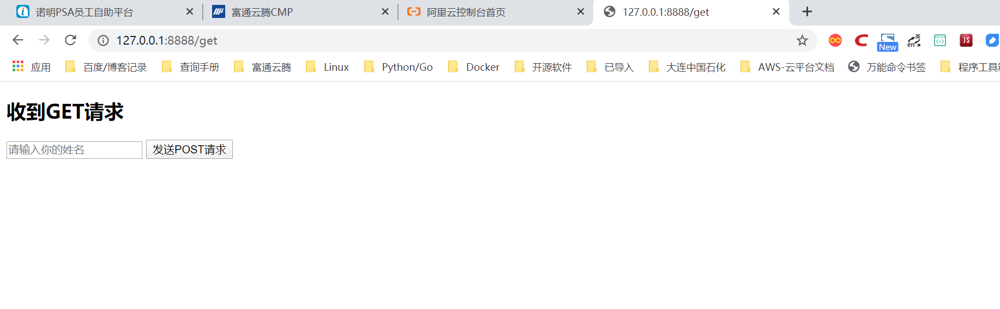
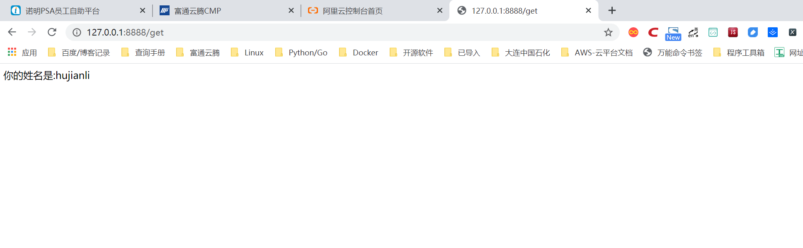

22.5.3. 请求参数的获取¶
客户端请求的参数有URL中的参数、GET请求中的参数和POST请求中的参数。
在Tornado框架中，要获取URL中包含的参数，与Flask框架有相似之处，它们都是在URL定义中定义获取参数，并在对应的业务方法中给出相应的参数名进行获取。
Tornado框架URL定义字符串中，使用正则表达式来匹配URL及URL中的参数，比如：
(r"uid/([0-9]+)",UserHdl)
这种形式的URL字符串定义可以接受形如“uid/”后跟一位或多位数字的客户端URL请求。
对应以上URL定义，可以以如下方式定义get()方法：
def get(self,uid)：
pass
这样，当匹配的URL请求到来时，会截取属于正则组匹配的部分，传递给get()方法，从而把数据传递给uid变量，在get()方法中得到使用。
代码演示1¶
演示了在GET方法中获取URL中参数的基本实例，代码如下：
# -*- encoding:utf-8 -*-
import tornado.ioloop
import tornado.web
"""
代码中使用了上述正则表达式的URL字符串定义及带有uid参数的get()方法。
"""
class MainHdl(tornado.web.RequestHandler):
def get(self, uid): ##方法中有uid参数，获取URL参数
self.write('你好,你的UID号是：%s!' % uid)
app = tornado.web.Application([
(r'/([0-9]+)', MainHdl), ##正则表达式URL，捕获参数
], debug=True)
if __name__ == '__main__':
app.listen(8888)
tornado.ioloop.IOLoop.instance().start()
【代码说明】 代码中使用了上述正则表达式的URL字符串定义及带有uid参数的get()方法。
【运行效果】 服务器运行后，浏览器访问结果如图
而如果要获取GET或POST请求参数，则更加简单。只需要调用从RequestHandler类中继承来的get_argument()方法即可，其原型如下：
get_argument('name',default='',strip=False)
其中参数意义是：
- name 请求中的参数名称；
- default 指定没有获取参数时给定一个默认值；
- strip 指定是否对获取的参数进行两头去空格处理。
代码演示2¶
# -*- encoding:utf-8 -*-
import tornado.ioloop
import tornado.web
html_txt = """
<!DOCTYPE html>
<html>
<body>
<h2>收到GET请求</h2>
<form method='post'>
<input type='text' name='name' placeholder='请输入你的姓名' />
<input type='submit' value='发送POST请求' />
</form>
</body>
</html>
"""
class MainHdl(tornado.web.RequestHandler):
def get(self):
self.write(html_txt)
def post(self):
name = self.get_argument('name', default='匿名', strip=True)
self.write("你的姓名是:%s" % name)
app = tornado.web.Application([
(r'/get', MainHdl),
], debug=True)
if __name__ == '__main__':
app.listen(8888)
tornado.ioloop.IOLoop.instance().start()
【代码说明】 在上述代码中，服务器收到GET请求时，返回一个带有表单的页面内容；当用户填写自己的姓名，并单击“发送POST请求”时，将用户输入的姓名以POST参数形式发送到服务器端。最后服务器端调用get_argument()方法来获取和处理它。
发送“localhost:8888/get”的GET请求时，返回页面如图1所示，而当用户提交时显示的页面如图2所示。
图1

图2
